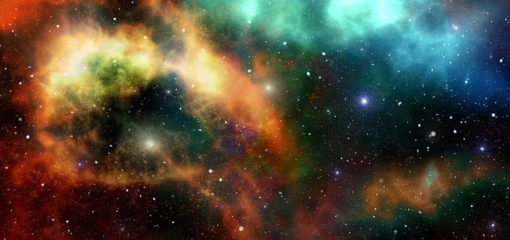

|
Space, also known as outer space or just space, refers to the vast expanse beyond Earth's atmosphere that extends to the edges of the observable universe. It is largely a vacuum, with very low density and few particles. Space is home to a variety of celestial bodies, including planets, moons, stars, galaxies, black holes, and more. It is also the site of many important scientific and technological advancements, including space exploration, satellite communication, and more. The study of space is known as astronomy, and scientists continue to explore and learn more about this vast and fascinating realm. Space refers to the vast, three-dimensional expanse that exists beyond the Earth's atmosphere, containing all celestial bodies such as planets, stars, galaxies, and other forms of matter and energy. It is also known as the universe, which encompasses everything that exists, including all matter, energy, and time.Space is mostly empty, with only a few particles per cubic meter, but it also contains various forms of radiation, including light and cosmic rays. It is infinite in size and constantly expanding, and its exploration has been a subject of scientific inquiry and human fascination for centuries.The study of space and its contents is known as astronomy, and it has helped humans to better understand the origins and evolution of the universe, as well as to develop new technologies and explore the possibility of life beyond our planet. |
 |
|
Exploring the universe: Space refers to the vast, three-dimensional expanse that exists beyond the Earth's atmosphere, containing all celestial bodies such as planets, stars, galaxies, and other forms of matter and energy. It is also known as the universe, which encompasses everything that exists, including all matter, energy, and time. Space is mostly empty, with only a few particles per cubic meter, but it also contains various forms of radiation, including light and cosmic rays. It is infinite in size and constantly expanding, and its exploration has been a subject of scientific inquiry and human fascination for centuries. The study of space and its contents is known as astronomy, and it has helped humans to better understand the origins and evolution of the universe, as well as to develop new technologies and explore the possibility of life beyond our planet. |
 |
|
Space exploration history: The history of space exploration can be traced back to ancient times when people observed and studied the stars and planets. However, the modern era of space exploration began in the mid-20th century with the launch of the first artificial satellite, Sputnik 1, by the Soviet Union in 1957. Following this, the space race between the United States and the Soviet Union intensified, with both countries launching a series of satellites, manned spacecraft, and robotic missions to explore and study space. In 1961, Yuri Gagarin became the first human to orbit the Earth, followed by Alan Shepard's suborbital flight in the same year. In 1969, the United States achieved a major milestone in space exploration when the Apollo 11 mission successfully landed astronauts Neil Armstrong and Edwin "Buzz" Aldrin on the Moon. This marked the first time humans had set foot on another celestial body. Over the next few decades, space exploration continued to advance with the launch of space stations such as Skylab and Mir, as well as a variety of robotic missions to study planets, asteroids, and comets. In 1998, the first components of the International Space Station (ISS) were launched, marking the beginning of a new era of international cooperation in space exploration. Since then, space exploration has continued to advance with new technologies, spacecraft, and missions, including the Mars Exploration Rovers, the Cassini-Huygens mission to Saturn, and the New Horizons mission to Pluto. The private sector has also become increasingly involved in space exploration, with companies like SpaceX and Blue Origin developing reusable rockets and planning missions to colonize Mars. Overall, the history of space exploration has been a fascinating journey of scientific discovery, technological innovation, and human achievement, and it continues to inspire new generations of scientists, engineers, and explorers. |
The history of space
The history of space exploration can be traced back to ancient times when people observed and studied the stars and planets. However, the modern era of space exploration began in the mid-20th century with the launch of the first artificial satellite, Sputnik 1, by the Soviet Union in 1957. Following this, the space race between the United States and the Soviet Union intensified, with both countries launching a series of satellites, manned spacecraft, and robotic missions to explore and study space. In 1961, Yuri Gagarin became the first human to orbit the Earth, followed by Alan Shepard's suborbital flight in the same year. In 1969, the United States achieved a major milestone in space exploration when the Apollo 11 mission successfully landed astronauts Neil Armstrong and Edwin "Buzz" Aldrin on the Moon. This marked the first time humans had set foot on another celestial body. Over the next few decades, space exploration continued to advance with the launch of space stations such as Skylab and Mir, as well as a variety of robotic missions to study planets, asteroids, and comets. In 1998, the first components of the International Space Station (ISS) were launched, marking the beginning of a new era of international cooperation in space exploration. Since then, space exploration has continued to advance with new technologies, spacecraft, and missions, including the Mars Exploration Rovers, the Cassini-Huygens mission to Saturn, and the New Horizons mission to Pluto. The private sector has also become increasingly involved in space exploration, with companies like SpaceX and Blue Origin developing reusable rockets and planning missions to colonize Mars. Overall, the history of space exploration has been a fascinating journey of scientific discovery, technological innovation, and human achievement, and it continues to inspire new generations of scientists, engineers, and explorers.
The Thoughts Of Galileo Galilei
Galileo Galilei (1564-1642) was an Italian scientist and mathematician who made significant contributions to the fields of physics, astronomy, and mathematics. Some of his notable achievements include: |